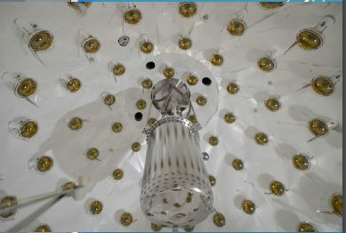

Research / DarkSide-50
DarkSide-50

Inside the DarkSide-50 neutron veto, with the cryostat holding the liquid argon TPC at the center
DarkSide-50 (DS-50) is dual-phase liquid argon time projection chamber (LArTPC), shown in the photos below, designed to search for Weakly Interacting Massive Particles (WIMPs), a class of dark matter candidates with masses on the scale of typical nuclei, up to about 100 times heavier that scatter on target nuclei inside the detector, producing a signal typically below ~100 keV, with spin-independent elastic scattering cross sections far weaker than that of any other known particle. The key to performing a sensitive WIMP search is to achieve extremely low background rates, so that any WIMP-like signals in the detector can be interpreted as a possible dark matter signal, rather than a signal from an already-known Standard Model particle. DS-50 was the first dark matter direct detection experiment to achieve a full background-free exposure, demonstrating the potential of liquid argon detectors to reach unmatched signal purity in the search for dark matter. It also showed that argon extracted from deep underground (Underground Argon, or UAr) is depleted in the radioactive isotope 39Ar, which is naturally present in atmospherically-derived argon. Due to its unmatched purity, DS-50 also set world-leading limits on light dark matter candidates that couple to nuclei or to electrons through the "S2-only" channel that specifically counts the number of ionization electrons produced after a light dark matter particle scatters at very low energy. The work with DS-50 laid the foundation for future LAr-based dark matter detectors.


Left: View of the mountains from the surface labs of Laboratori Nazionale del Gran Sasso (LNGS), DarkSide-50's host laboratory
Middle: The top of the DarkSide-50 water tank from Hall C of LNGS, before installing the clean room on top of it
Right: Inside the water tank, prior to installing reflector and filling the detectors


Left: Water Cherenkov muon veto
Middle: Boron-loaded liquid scintillator neutron veto
Right: LArTPC dark matter target


The design of the DS-50 detector is illustrated to the left. DS-50 contains three nested detectors: the innermost LArTPC, the liquid scintillator veto, and the outer water tank.
LArTPC: The liquid argon time projection chamber is the innermost detector and the dark matter target. A particle that scatters in the detector recoils off of either an atomic electron (electronic recoil) or an argon nucleus (nuclear recoil). The recoiling electron or nucleus excites and ionizes its neighboring atoms. The excited atoms de-excite by releasing photons (scintillation, or S1) which are detected by an array of photosensors (photomultiplier tubes, or PMTs) at the top and bottom of the TPC. The size of the scintillation pulse tells us the energy of the recoil, and its time profile powerfully separates electronic and nuclear recoils. Ionization electrons produced in the recoil and drifted in an electric field to a gas pocket at the top of detector, where a second, stronger electric field accelerates electrons through the gas pocket to produce a secondary pulse of light (S2), which is proportional to the number of extracted electrons. The time between S1 and S2 tells us the height of the interaction in the detector, and distribution of light on the top PMT array tells us the horizontal coordinates. If a particle scatters multiple times in the detector (which WIMPs will never do), we see multiple S2 pulses. These principles are illustrated in the lower drawing.
Liquid Scintillator Veto: One of the most important backgrounds in a WIMP search comes from neutrons, which can scatter on a single argon nucleus in the TPC, producing a signal exactly like a WIMP. Radiogenic neutrons are produced by rare nuclear reactions in the detector material, including spontaneous fission of 238U or (α,n) reactions induced by trace α-emitting radioactive contaminants. The liquid scintillator veto (LSV) is a neutron veto: if it detects a neutron in coincidence with a WIMP-like signal in the TPC, it allows us to identify the event as a background. The LSV uses a boron-loaded organic liquid scintillator -- a mixture of pseudocumene and trimethyl borate -- which is a highly effective neutron moderator that can quickly thermalize neutrons that enter the LSV. Once the neutrons slow down, they capture on 10B in the trimethyl borate, which produces recoiling α and 7Li nuclei as a delayed coincidence signal. The prompt thermalization and delayed capture scintillation signals provide two powerful handles for tagging neutrons with >99% efficiency.
Water Tank: Cosmic-ray muons interacting with the laboratory and detector materials can also produce cosmogenic neutrons. These very high-energy neutrons can penetrate all of the detector's shielding but still make a WIMP-like signal in the TPC. To identify these events, we submerge the LSV in a water tank, which provides passive shielding to the inner detectors from environmental radiation and detects Cherenkov light produced by the muon or its associated shower products, which are formed in coincidence with the cosmogenic neutron. In this sense, the water tank serves as a muon veto: if we see a coincidence between a WIMP-like signal in the TPC and a cosmogenic signal in the muon veto, we can identify an event as being a cosmogenic neutron background, rather than a WIMP.


The above figures show the final results from DS-50's dark matter searches. For a given dark matter mass, these plots tell us that dark matter must have an elastic scattering cross section, either on a nucleon or on an electron, above the red curves, with 90% confidence. See the referenced papers for more details.
Top left: Results from DS-50's WIMP search, looking for higher-mass dark matter that couple to nuclei using the full exposure for a completely background-free WIMP-search. Note that more recent results from other experiments have stronger sensitivity than is shown in this figure.
[DarkSide Collaboration. "DarkSide-50 532-day dark matter search with low-radioactivity argon". Phys. Rev. D 98, 102006 (2018)]
Bottom left: Results from DS-50's light dark matter search in the S2-only channel, including the hypothesized Migdal effect, which gives sensitivity to dark matter with masses below ~0.5 GeV through this channel.
[DarkSide Collaboration. "Low-Mass Dark Matter Search with the DarkSide-50 Experiment". Phys. Rev. Lett. 121, 081307 (2018)]
[DarkSide Collaboration. "Search for low-mass dark matter WIMPs with 12 ton-day exposure of DarkSide-50". arXiv:2207.11966 (2022)]
[DarkSide Collaboration. "Search for dark matter-nucleon interactions via Migdal effect with DarkSide-50". arXiv:2207.11967 (2022)]
Right (all): Constraints on dark matter couplings to electrons. (Top two) Light dark matter elastically scattering on electrons via (left) heavy or (right) light mediator particles. (Middle two) Light bosonic dark matter absorbing on atomic electrons, creating a single outgoing electron with energy equal to the dark matter particle's mass, for (left) axion-like particles and (right) dark photons. (Bottom) Sterile neutrinos that can scatter on an atomic electron via its coupling to electron neutrinos.
[DarkSide Collaboration. "Constraints on Sub-GeV Dark-Matter–Electron Scattering from the DarkSide-50 Experiment". Phys. Rev. Lett. 121, 111303]
[DarkSide Collaboratoin. "Search for dark matter particle interactions with electron final states with DarkSide-50". arXiv:2207.11968 (2022)]